Fyrkat
und
Bestehend aus 8-9 Gebäuden, mit Langhaus, Schmiede usw.


41 - Fyrkat - Letztes Update 06.11.2024
| Navidaten: 56.62653 9.78189 oder: Vikingeborgen, Fyrkatvej 37 B & Fyrkatvej 45, 9500 Hobro |
02.09.2024 - Eröffnung der Ausstellung in einem Gebäude der Fyrkat Mühle in Anwesenheit von Königin Margrethe II.
Eine neue Ausstellung über die Geschichte der Wikingerburg Fyrkat bei Hobro wurde in Anwesenheit von Königin Margrethe II. am Montag, 02.09.2024, offiziell eröffnet. "Mit der neuen Ausstellung werden die Funde und die Verbreitung sehr nah an den Ort gerückt, an dem sie gefunden wurden, und bieten dem Publikum so ein integrierteres und viel besseres Museumserlebnis, sagt Ulla Varnke Sand Egeskov, Museumsinspektorin der Nordjyske-Museen und eine der beiden Hauptkräfte hinter der neuen Ausstellung. Die neue Ausstellung auf dem Møllegård Fyrkat wird den Besuchern einerseits eine Einführung in die Geschichte von Fyrkat und den anderen dänischen Wikingerburgen aus der Zeit von König Harald Blauzahn bieten, und andererseits die einzigartige Geschichte der Völva von Fyrkat entfalten. Sie war eine Seherin/Zauberin, die in einem der Gräber gefunden wurde, die bei der Wikingerburg ausgegraben wurden - siehe unten.
04.11.2023 - Zwei Wikingerschätze in der Nähe von Fyrkat gefunden
Im Herbst 2022 fanden Mitglieder der Nordjysk Detektorforening eine Reihe von Silbermünzen auf einem Feld bei Bramslev nordöstlich von Hobro ca. acht Kilometer von der Wikingerburg Fyrkat entfernt. Es stellte sich heraus, dass sie von zwei Wikingerschätzen stammten. Die Schätze können unter anderem anhand der unter Harald Blauzahn geprägten Münzen in die 980er Jahre datiert werden die gleiche Zeit, in der er nicht weit entfernt Fyrkat baute. Ausgrabungen vor Ort fanden im Frühjahr 2023 und nochmals im Herbst 2023 statt.
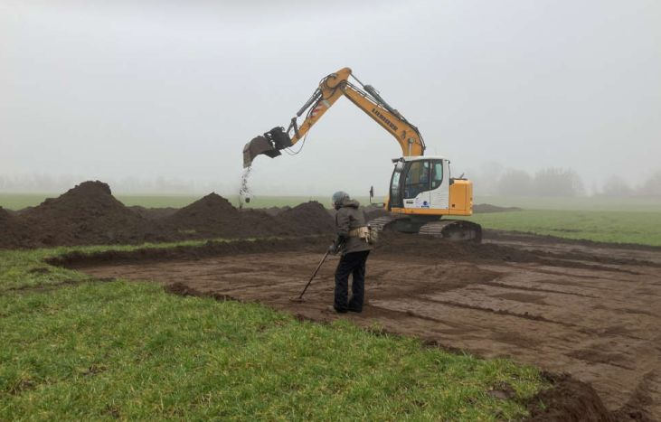
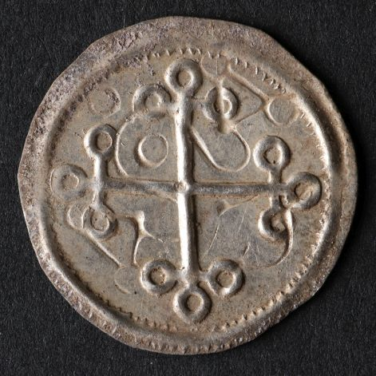
Die beiden Schätze wurden im selben Feld, weniger als 50 Meter voneinander entfernt, gefunden und enthalten beide eine große Anzahl kleiner Silbermünzen und zerschnittenen Silberschmuck, der vermutlich als Zahlungsmittel nach Gewicht diente, sog. Hacksilber. Insgesamt umfassen die beiden Schätze ca. 300 Silberstücke, davon etwa 50 ganze Münzen, darunter etliche dänische, deutsche und arabische Münzen.
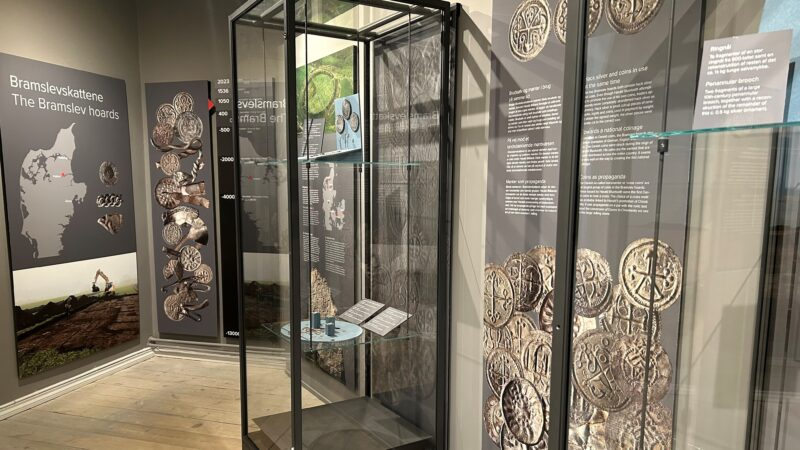
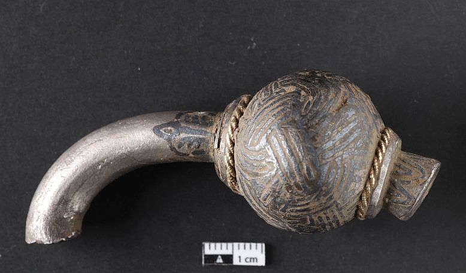
Bildquelle: Bramslevskattene im Aalborg Historiske Museum - Foto: Nordjyske Museer - aufgerufen 04.11.2023
Im Januar 2021 wurde durch die damalige Kulturministerin Joy Mogensen ein fast 400-seitiger Antrag in englischer Sprache nach Paris an die UNESCO Welterbe Institution (International Council on Monuments and Sites - ICOMOS) auf den Weg gebracht, der die Aufnahme der fünf dänischen Wikingerburgen in die Welterbeliste zum Ziel hatte. Hier der Link zur gekürzten Ausgabe "Management Plan Viking-Age Ring Fortresses as a World Heritage Site". Die Entscheidung fiel nun auf der 45. Sitzung des Welterbekomitees vom 10. bis 25 .September 2023 in Riad, Saudi-Arabien. Jeg ønsker ansøgningen held og lykke!
Es hat geklappt - Herzlichen Glückwunsch - Gestern, am
17.09.2023, wurde in
Riad
in
Saudi-Arabien auf der
45. Sitzung des Welterbekomitees
der UNESCO
beschlossen, die dänischen wikingerzeitlichen Ringburgen -
Aggersborg,
Fyrkat,
Nonnebakken,
Borgring und
Trelleborg - zum Welterbe
zu erklären.
Dieses Senkrechtluftfoto ist von der Webseite "Skraafoto.dk" - Lizenz: CC BY 4.0 - gehört zum "Styrelsen for Dataforsyning og Infrastruktur" - Aufnahmedatum 17.04.2023 - Download 04.11.2023 - von mir zugeschnitten.
Skraafoto ist also eine Webanwendung, die von der Dänische Agentur für Datenversorgung und Infrastruktur weltweit kostenlos bereitgestellt wird. Die Aufnahmen werden alle zwei Jahre erneuert und neben einer Senkrechtaufnahme wird ein Schrägbild aus jeder Himmelsrichtung angeboten, das man über eine Adresssuche aufrufen kann. Also gibt man in diesem Fall "Fyrkatvej 24, Nr Onsild, 9500 Hobro" in die Suchleiste ein, worüber das nächstgelegene Haus zur Burg (die hat keine Hausnummer) eingeblendet wird. Fyrkat liegt dann leicht westlich davon. Es sind Aufnahmen aus mehreren Jahren - 2017 - 2019 - 2021 - 2023 abrufbar. Sie werden auch zukünftig alle 2 Jahren aktualisiert. Deren Qualität / Auflösung ist mit nichts zu vergleichen!

Im Rahmen meiner 2022er Jütland Wikinger Tour war ich am Donnerstag, 16.06.2022, mal wieder bei der Ringburg Fyrkat. Im Zugangsgebäude ist nun ein kleiner Shop eingerichtet, bei dem man allerlei käuflich erwerben kann (auch mit EC-Karte). Diese Fotos konnte ich bei meinem Besuch anfertigen.


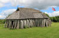

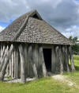

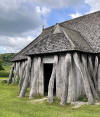

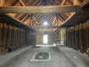

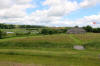
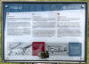 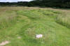 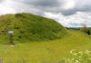 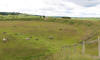 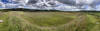 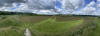 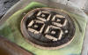


Die älteste Erwähnung findet sich als "Fyrkatte Mølle" im Jahr 1608 im Zusammenhang mit einer Volkszählung. Danach wird der Name 1664 als "Fyrkatt Mølle" und 1688 als "Fyhrkatt Mølle" in Grundbucheinträgen geschrieben.
Die älteste bekannte Karte der Region wurde mit dem Titel Fyrkat Mølle im Jahr 1779 von einem Herrn Andreas Haar in einer Größe von 29 cm x 45 cm gezeichnet - Quelle: historiskekort.dk - Abruf 14.03.2023
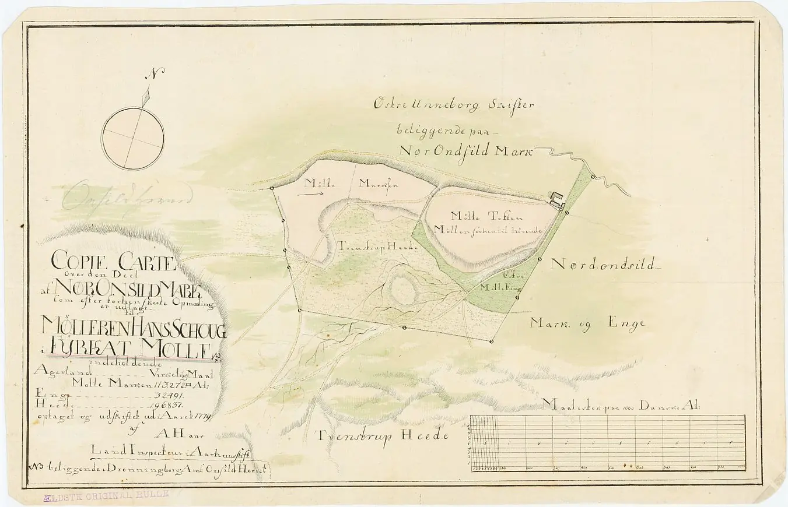
Von einer Wallanlage hören wir dagegen nichts bis zum Jahr 1894, als Daniel Bruun (*27.01.1856 - 22.09.1931, Offizier, Reisender, Autor)
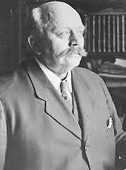
Bildquelle: Wikiwand - Lizenz: Public Domainzwei Zeichnungen mit einer entsprechenden Bezeichnung dazu anlegte, die sich im Bestand des Nationalmuseum in Kopenhagen bewahrt haben. Auf der zweiten Zeichnung ist doch eine kreisrunde Erhebung in der Landschaft deutlich erkennbar. So zeigte sich die Wallanlage auch noch in den 1950er Jahren.
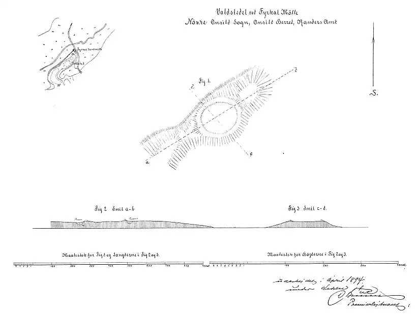
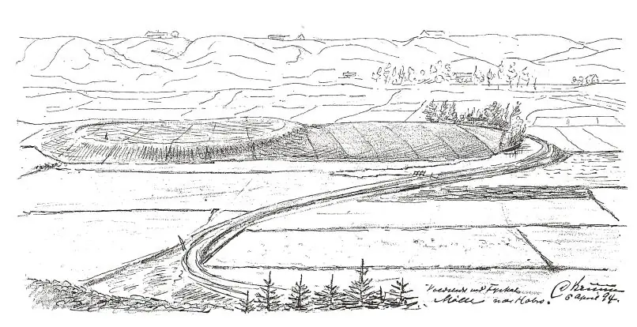
Quelle: Fyrkat - en jysk vikingeborg, Band 1 - Borgen og Bebyggelsen, von Olaf Olsen und Holger Schmidt, 1977, S. 15
Mit Hilfe der Stadt Hobro führte das Dänische Nationalmuseum dann im Spätjahr 1950 auf Veranlassung des Museums von Hobro eine kleine Probegrabung am Wall von Fyrkat durch, um zu untersuchen, ob die Anlage, die im Gelände über den niedergepflügten Ringwall zu vermuten war, ein Wikingerlager wie Trelleborg (Seeland) sein könnte.
Da sich dies bestätigte, wurde im folgenden Jahr eine großzügige Grabung unter der Leitung des Museumsinspektors C. G. Schultz (Peder Berthold Carl Georg Schultz - *29.08.1905 - 17.07.1958, Architekt und Archäologe)
 Bildquelle:
KUML 1958 -
Nachruf C. G. Schultz 1905-1958 - Lizenz:
CC-BY-SA
Bildquelle:
KUML 1958 -
Nachruf C. G. Schultz 1905-1958 - Lizenz:
CC-BY-SA
eingeleitet. Beim Tod von Architekt Schultz im Jahre 1958 war die Arbeit fast beendet. Der Verlauf von Wall und Graben war auf der ganzen Strecke erforscht, ein großer Teil der Bestattungen ausgegraben und innerhalb des Lagers waren 10 von den 16 großen Häusern untersucht. Ganz unberührt war nur das südwestliche Viertel des Lagers. Dies soll auch so bleiben, um Archäologen späterer Zeit die Möglichkeit zu lassen, das Ergebnis der Untersuchung nachzuprüfen.
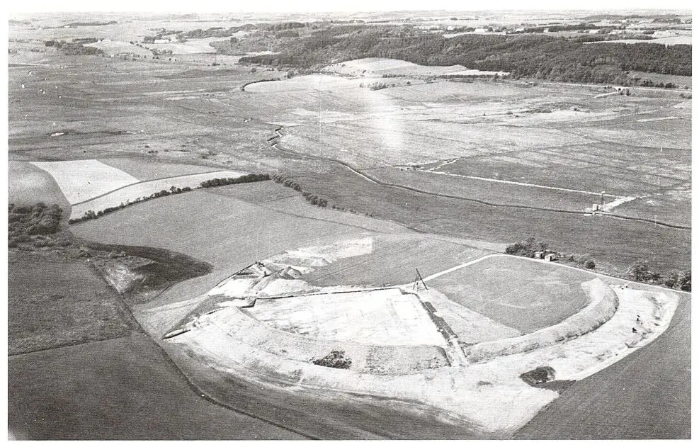
Ansicht aus dem Jahr 1954 - Quelle: Fyrkat - en jysk vikingeborg, Band 1 - Borgen og Bebyggelsen, von Olaf Olsen und Holger Schmidt, 1977, S. 17 - Foto: Thorkild Ramskou (*25.07.1915 - 25.04.1985, dänischer Archäologe, Angestellter des Nationalmuseums).
Diese Aufnahme stammt von "Danmark set fra Luften", ein freies Angebot von der Königlichen Bibliothek in Kopenhagen, und ist aus dem Jahr 1955 - Urheber: Aalborg Luftfoto - Erlaubte Wiedergabe unter Angabe des Urhebers / Det kgl. Bibliotek. Abgerufen / eingestellt 27.08.2023 - Kontrast/Schärfe verändert.
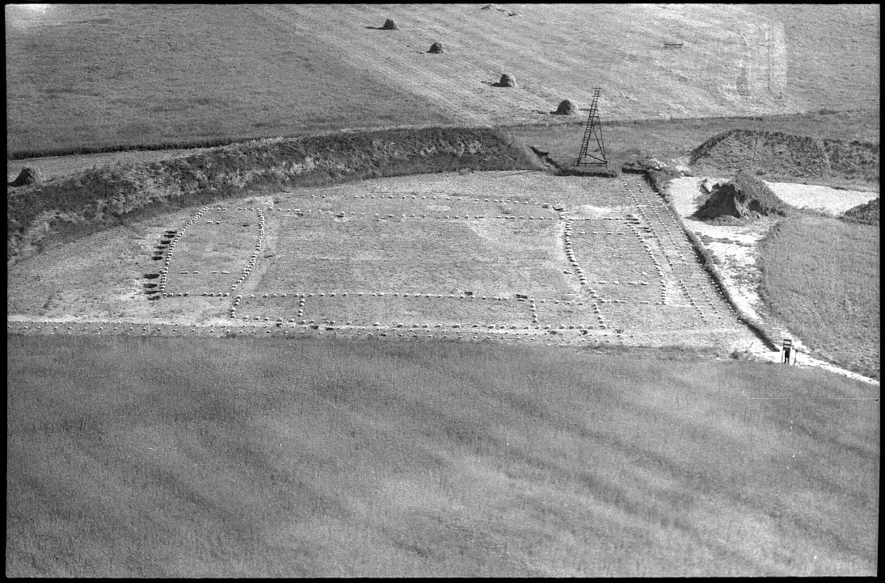
Von Anfang an fand die Grabung in der Öffentlichkeit Jütlands lebhaftes Interesse, und starke Stimmen erhoben sich für den Wiederaufbau des Lagers als historisches Denkmal. Unter diesem Eindruck führte das Nationalmuseum im Mai 1953 eine Sammlung zum Erwerb des Mühlengutes Fyrkat durch, von dessen Ländereien das Wikingerlager einen wesentlichen Teil bildete. Schon im nächsten Jahr, im April 1954, konnte der Kauf abgeschlossen werden. Der Graben wurde freigelegt, der Ringwall aus den abgerutschten und niedergepflügten Erdmassen wieder hergestellt und im Lager das Wegenetz und die ausgegrabenen Hausplätze markiert, indem die Pfostenlöcher mit Beton ausgegossen wurden.
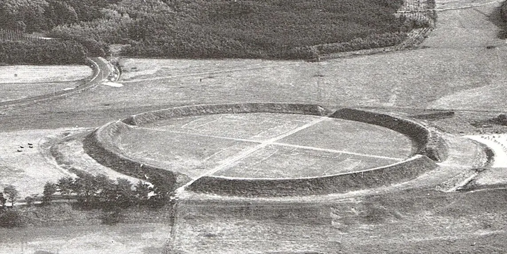
Ansicht aus dem Jahr 1959 - Quelle: Fyrkat - en jysk vikingeborg, Band 1 - Borgen og Bebyggelsen, von Olaf Olsen und Holger Schmidt, 1977, S. 36 - Foto: Hans Stiesdal - Nationalmuseum Kopenhagen
Unmittelbar vor der Ringburg wurde der Nachbau eines Langhauses als Rekonstruktion erstellt. Dieses Haus wurde bereits zwischen Mai 1982 und Dezember 1984 in 24192 Arbeitsstunden - unter Anleitung von Experten - von Handwerkern errichtet. Dies lässt deshalb den Schluss zu, dass in der Wikingerzeit 50 Männer 2 ½ Jahre brauchten, um ein solches Haus zu bauen. Die Handwerker durften beim Nachbau nur Werkzeuge benutzen, die auch schon die Wikinger vor 1000 Jahren hatten. Das Haus ist 28,40 m lang, 7,40 m breit und 7,50 m hoch. Das 210 m² große Haus ist in einen 16 m langen Aufenthaltsraum und zwei kleinere Giebelräume aufgeteilt. Für dieses Haus wurden insgesamt 300 m³ unverarbeitetes Eichenholz verbraucht. Das Dach wurde mit ca. 25000 zurechtgehauenen Eichenschindeln eingedeckt. Das Haus ist inzwischen schwer in die Jahre gekommen und an einigen Stellen ordentlich verwittert (Stand 6/2022). Hier eine Aufnahme von mir vom 26.08.2016
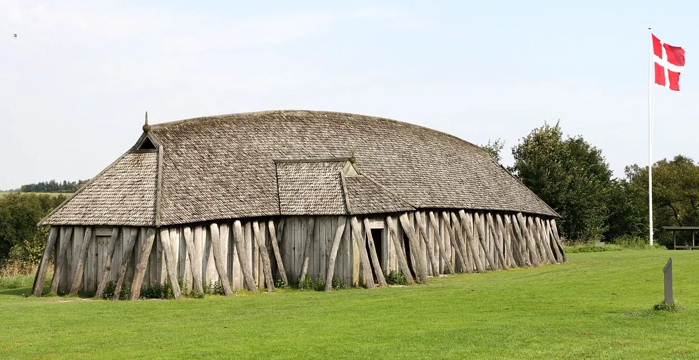
Die Ringburg Fyrkat liegt auf einer kleinen Landspitze, die sich von Süden in das breite Onsild-Flußtal vorschiebt, ein paar Kilometer westlich der alten Kleinstadt Hobro. Auf drei Seiten ist die Landspitze von flachem Wiesenland umgeben, das früher weicher Sumpf war. Nur von den Hügeln im Südwesten führte ein fester Weg dorthin. Aller Wahrscheinlichkeit nach war die Ringburg außerdem von der See her zu erreichen. Der steile Nordrand der Landspitze zeigt, dass der Fluss, dessen regulierter Lauf jetzt in großem Abstand an der Burg vorbeizieht, früher am Fuß der Landspitze lief und sich in den Hang eingegraben hat.
Schon durch seine Lage war Fyrkat gut geschützt. Die enge Landverbindung war leicht zu verteidigen, der schmale seichte Flusslauf ließ sich ausreichend für den Verkehr zu und von dem Lager nutzen. Für eine feindliche Flotte war er als Angriffsweg ungünstig, und die weite Aussicht über das Tal sicherte die Festung gegen einen überraschenden Angriff.
Was der Name Fyrkat bedeutet weiß man nicht sicher. Möglicherweise hat das Lager ihn erst lange nach seiner Zerstörung erhalten, über die Geschichte des Lagers gibt es bis 1894 - siehe oben - keine Nachrichten, keine der wenigen Schriftquellen aus der Wikingerzeit nennt es und kein bekanntes historisches Ereignis kann hier lokalisiert werden. Vom Ausgräber der Ringburg wurde als Erklärung für den Namen angeführt, dass das Wort Kat in der Befestigungsterminologie des 17. Jahrhunderts eine Erdwerk oben auf dem eigentlichen Wall bedeutet hat. Da man in der Renaissancezeit kaum etwas anderes von dem verfallenen Wikingerlager als die vier aufragenden Wallstücke zwischen den vier zusammengesunkenen Toröffnungen sehen konnte, kann man die Stätte die vier Katte - Fyrkat, genannt haben .
Die Häuser des Lagers waren hauptsächlich aus Holz gebaut, und das gleiche vergängliche Material ist für die Befestigung der Straßen und zur Verstärkung des Wallsystems verwandt worden. Außer einigen Pfostenresten in den Toren und unter dem Wall ist alles Bauholz im Laufe der Zeit zugrunde gegangen. Das meiste ist verbrannt, einiges ist beseitigt worden und der Rest ist verfault. Trotzdem war es möglich, die Konstruktion und Bebauung der Anlage aufzuspüren, weil man beim Bau hauptsächlich Holzpfosten verwandt hat, die in die Erde eingegraben wurden. Der Teil der Pfosten, der in der Erde stand, verrät sich dem Archäologen durch eine Verfärbung des Untergrundes. Das sind die Pfostenlöcher, die - jetzt mit Beton ausgefüllt - den Plan des Wegenetzes und der Häuser im Gelände anzeigen.
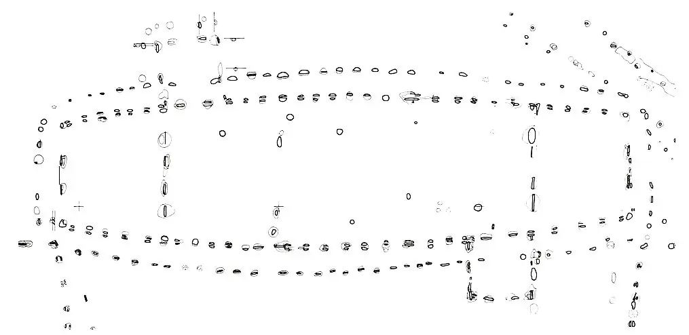
Fyrkat - Haus 1 N - Quelle: Fyrkat - en jysk vikingeborg, Band 1 - Borgen og Bebyggelsen, von Olaf Olsen und Holger Schmidt, 1977, S. 157 - Zeichnung: Holger Schmidt - 1971 - Nationalmuseum in Kopenhagen
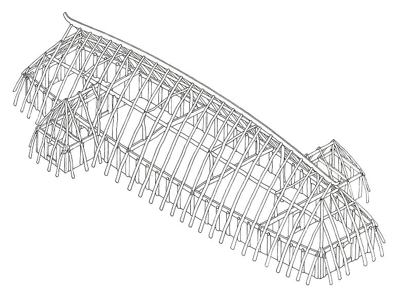
Fyrkat - Rekonstruktionsversuch Langhaus - Quelle: Fyrkat - en jysk vikingeborg, Band 1 - Borgen og Bebyggelsen, von Olaf Olsen und Holger Schmidt, 1977, S. 135 - Zeichnung: Holger Schmidt - 1968 - Nationalmuseum in Kopenhagen
Die 16 großen Häuser des Lagers waren 28,5 m lang, entsprechend 96 römischen Fuß. Die Breite betrug an den Schmalseiten etwa 5 m, in der Mitte 7,5 m. Die Häuser waren nicht wie die von Trelleborg im Stabwerk, sondern in einer Mischung von Bretter- und Fachwerktechnik gebaut. Charakteristisch ist das System der Langseiten mit lotrechten Doppelpfosten, die als Rahmen für die Wandausfüllungen dienten. Wahrscheinlich waren das meistens dünne Bohlen, es sind aber auch lehmbeschlagenes Flechtwerk und Stabbretter festgestellt worden.
Die äußere Reihe Pfostenlöcher, die in Trelleborg der Hauswand in gut einem Meter Abstand folgt und die dort als Zeichen eines überdeckten Laufgangs gedeutet wurde, findet sich auch in Fyrkat. In diesen Löchern standen aber anscheinend schmale Bohlen mit einer geringen Schräge nach innen. Sie werden als Stütze für Wand und Dach gedient haben und es kann sein, dass die Dachsparren nicht am Dachfuß endeten, sondern in die Erde geführt waren. Ein Teil der Dachlast wurde aber von vier großen schweren Säulen im Innern des Hauses getragen. Sie waren bis zu einem Meter tief in die Erde eingegraben und bildeten zugleich einen Teil der Querwände des Hauses. Als Dachmaterial dienten entweder Schindeln oder Stroh oder übereinander greifende Bretter.
Die Häuser sind in drei Räume aufgeteilt, eine Kammer an jedem Giebel und eine große, über 18 m lange Halle in der Mitte. Wozu die Giebelräume benutzt wurden, weiß man nicht, die Halle war aber zweifellos sowohl Aufenthalts- wie Schlafraum. In einem Teil der Häuser sind mitten in der Halle Reste einer großen Feuerstelle nachgewiesen worden, und entlang den Wänden scheinen breite Schlafbänke gestanden zu haben. Mindestens ein halbes Hundert Menschen konnten, ohne beengt zu sein, in jeder Halle übernachten.
Keineswegs aber dienten alle Häuser zum Wohnen. Im östlichen Haus des südöstlichen Blocks scheint eine Schmiedewerkstatt gewesen zu sein, und das südliche Haus im gleichen Block hatte keine Feuerstelle, enthielt aber große Mengen Getreide und war vielleicht der Speicher.
Jedes Haus hatte vier Türen ins Freie, eine in jedem Giebel und eine auf jeder Langseite. Die Türstellen sind an den langen Bohlenlöchern der Türrahmen zu erkennen. Die Seitentüren führten beide nahe an den Zwischenwänden in die Halle, sie liegen sich diagonal gegenüber.
In den Häusern an den Achsenstraßen liegen die Türen den entsprechenden Türen auf der anderen Straßenseite schräg gegenüber, so dass die Bewohner sich nicht in den Weg kamen, wenn sie gleichzeitig heraustraten.
Die Seitentüren der Häuser von Fyrkat hatten alle einen Windfang. Auf der Straßenseite war vor den Türen nur für einen kleinen Vorbau Platz. Zur Hofseite und gegen den Wall hin sind dagegen die Windfänge sehr groß und erinnern fast an Kirchenvorhallen.
Fyrkat ist ein Wikingerlager vom gleichen Typ wie Trelleborg und Vallø Borgring auf Seeland, Nonnebakken auf Fünen (überbaut) und Aggersborg am Limfjord. Diese fünf Anlagen sind nach dem gleichen System gebaut, einem streng geometrischen Schema, das mit äußerster Präzision befolgt wurde. Sie sind alle kreisrund, umgeben von einem Ringwall und einem Graben. Im Wall befinden sich vier Tore, eines in jeder Himmelsrichtung. Zwei schnurgerade Wege, einer vom Nordtor zum Südtor und einer vom Osttor zum Westtor, kreuzen sich in der Mitte der Anlage und teilen das Lager in vier gleich große Teile. Jedes dieser Viertel enthält einen Block aus vier gleich großen Holzhäusern, die wie Flügel um einen quadratischen Hof liegen. In dem größten Lager, in Aggersborg, befinden sich jedoch in jedem Viertel drei Häuserblöcke. Die Häuser haben alle den gleichen Grundriss mit gebogenen Längsseiten und geraden Giebeln, und auch die Raumaufteilung ist in allen Häusern gleich. Als Maßeinheit ist wohl überall der römische Fuss benutzt worden.
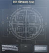

Ganz gleich sind die vier Lager allerdings nicht, sie unterscheiden sich in der Größe und jedes von ihnen hat seine kleinen individuellen Züge und Eigentümlichkeiten.
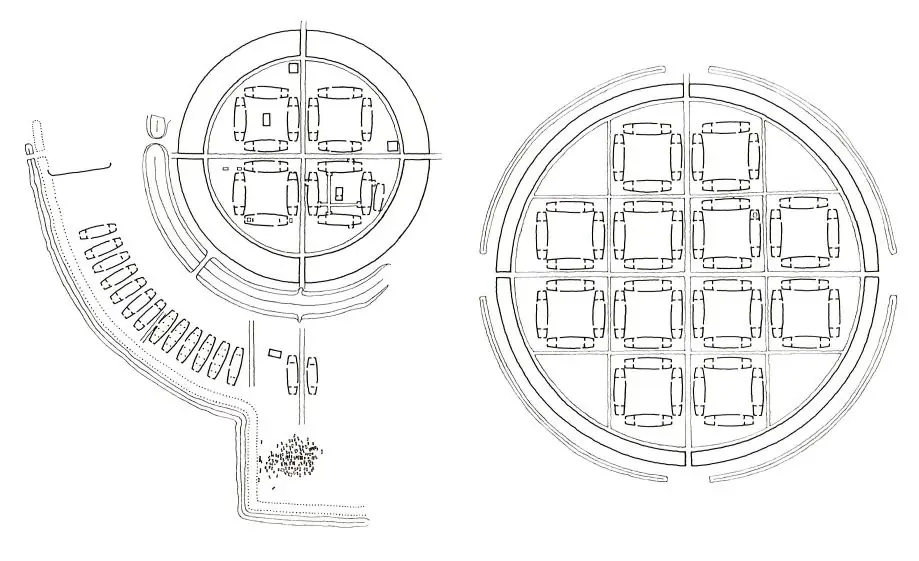
Trelleborg - Aggersborg - Planzeichnungen - Nationalmuseum in Kopenhagen
Von Fyrkats Verteidigungswerken ist der Graben das schwächste Glied. Er folgt dem Ringwall in einem Abstand von etwa 10,5 m, aber er wurde nur vor dem nordöstlichen und dem südwestlichen Wallabschnitt angelegt, also nur, wo das anschließende Gelände hoch liegt. Der Graben ist ein trockener Spitzgraben mit glatten schrägen Seiten, ist nur wenig über 2 m tief und nur 7 - 8 m breit. Er war nicht mit Pfahlsperren oder Palisaden verstärkt, und nur in Verbindung mit Ausfällen von der Burg hat er einen Verteidigungswert gehabt. Man legte so wenig Wert auf den Graben, dass man sich nicht bemühte, ihn fertig zu stellen. Auf einer langen Strecke im Südwesten hat man die Arbeit eingestellt, ehe der Graben die volle Tiefe erreicht hatte.
Dagegen ist bei der Ausführung des Ringwalls keine Anstrengung gespart worden. Seine jetzige Form als grasbewachsenes Erdwerk mit schrägen Seiten und schmaler Oberfläche ist vom Nationalmuseum ausgeführt worden und nur als Andeutung der Lage und Höhe des ursprünglichen Walls gedacht. Die Wälle der Wikingerlager waren nämlich ganz anders, sie werden wie ein riesiger, mit Erde gefüllter Holzkasten ausgesehen haben. Die Ausgrabungen enthüllten ihren komplizierten Aufbau. Sie hatten lotrechte Innenseiten und eine steile Außenfront, bekleidet mit waagrechten Planken in festem Rahmenwerk. Außerdem war die Schräge der Außenfront mit dichten Palisaden bedeckt. Waagrechte Ankerbalken quer durch den Wall sicherten beide Seiten gegen Ausgleiten. Eine Brustwehr aus Holz wird die Außenfront des Walls gekrönt haben, die außerdem mit Streben verstärkt und an schweren lotrechten Pfählen im Wallkörper verankert war. Die Erdmassen des Walls waren zu einem großen Teil aus gestapelten Grassoden gebildet. Sein innerer Durchmesser betrug 120 m, seine Stärke 12 m und die vermutliche Höhe bis zum Fuße der Brustwehr etwa 3 m.
Die vier Toröffnungen sind jetzt offene Einschnitte im Wall. Ursprünglich waren sie überdeckt und verbanden die vier Wallabschnitte, die dadurch gemeinsam verteidigt werden konnten.
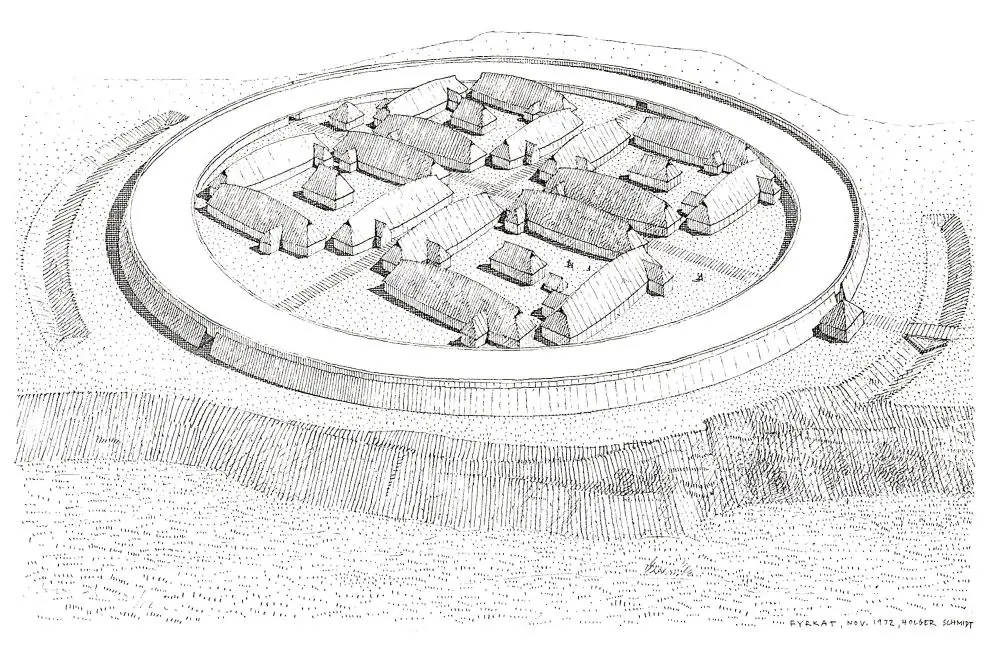
Diese Zeichnung gibt uns eine Vorstellung wie Fyrkat ausgesehen hat, als es bevölkert war - Quelle: Fyrkat - en jysk vikingeborg, Band 1 - Borgen og Bebyggelsen, von Olaf Olsen und Holger Schmidt, 1977, S. 107 - Zeichnung: Holger Schmidt - 11/1972 - Nationalmuseum in Kopenhagen
In den geschlossenen Höfen innerhalb der Blöcke liegen kleine viereckige Häuser mit Feuerstellen. Am Osttor steht ein kleines Haus, und ein ähnliches Haus steht außen vor dem Westtor, vielleicht für die Wache. Vor diesem Tor liegt innen ein kleines Grubenhaus.
Das Straßennetz besteht aus den schon erwähnten Achsenstraßen, die sich im Zentrum treffen, und aus einer Ringstraße, die dem Fuß des Walls folgt. Beide Wegsysteme waren mit Holzplanken befestigt, die auf Balken in der Längsrichtung des Weges ruhten. Die Balken wurden durch eingerammte Holzpflöcke gehalten. Die Achsenstraßen lagen auf drei oder fünf, die Ringstraßen auf zwei Balkenebenen.
Nordöstlich vom Lager, auf dem geschützten Teil der Landzunge, hatten die Wikinger ihren Friedhof. Über den Friedhof hin läuft ein breiter bohlenbelegter Weg, der sich auf einer Strecke von fast 40 m zu einem kleinen, 5 m breiten Platz ausweitet. Hier fanden wohl die religiösen Feiern beim Begräbnis statt. Den Friedhof und die Wege hat man halbwegs im Gelände markieren lassen.
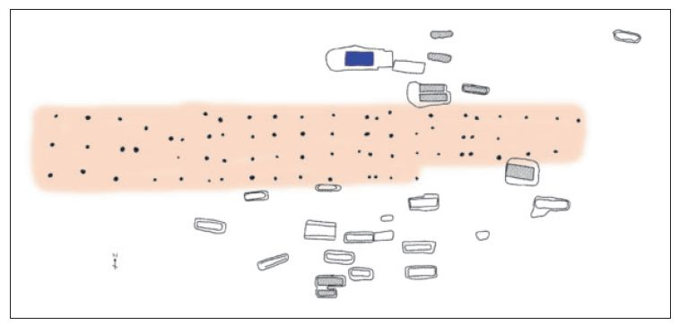
Nach Roesdahl, Else - Fyrkat. En jysk vikingeborg. II. Oldsagerne og gravpladsen, København 1977, S. 77 - aus der Abhandlung "Kong Haralds Völve", Peter Pentz / Maria Panum Baastrup / Sabine Karg / Ulla Mannering - Nationalmuseets Arbejdsmark, 2009, S. 217
Bisher sind 30 Gräber ausgegraben worden, allesamt keine Brandgräber - 18 Sarggräber, zwei Wagenkästen, 10 Gräber mit Beigaben, nur ein Waffengrab mit einer Axt. Anhand der Grabgrubengröße wurden 9 Gräber als Kinderbestattungen und ca. 20 Gräber als Bestattungen von Erwachsenen gedeutet. Gräber mit reichen Beigaben liegen hier Seite an Seite mit Gräbern ohne Beigaben. Die Skelette sind in dem kalkarmen Boden vergangen. In zwei der reichsten Gräber waren die Toten in Wagenkästen beigesetzt, von denen aber nur die Nägel erhalten sind. Insbesondere das Grab IV (oben blau markiert), eines der Gräber mit Wagenkasten ist bis heute forschungsgeschichtlich etwas besonderes. Es wird angenommen, dass hier eine Völva mit ihrer Ausstattung begraben wurde.
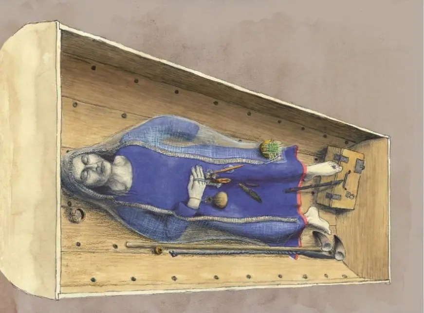
Diese Rekonstruktionszeichnung des Grabes stammt von Thomas Hjejle Bredsdorff und zeigt im Grab IV die Völva mit ihren Grabbeigaben. Ich habe die ursprünglich senkrecht angelegte Zeichnung wegen der besseren Verwendung hier waagrecht ausgelegt.
Das etwas abseits gelegene Grab IV ist das reichste und größte Grab des gesamten Ost-West ausgerichteten Gräberfeldes (Grabgrubengröße: L: 4,85 m / B: 1,70 m / T: 1,20 m). Die etwa 170 cm große Frau war in Rückenlage in den abnehmbaren hölzernen Kasten eines Wagens gebettet worden (Maße: 2,10 m x 1,05 m x 0,45 m). Der Wagenkasten hinterließ Spuren von 7 Eichenplanken (Dicke 2 - 2,5 cm) und 147 Nägel die auf 6 Längsreihen verteilt waren. Er war mit Schafswolle kalfatert und mit einem Schafsfell ausgelegt worden. Solche Behältnisse gibt es gelegentlich auch in anderen vornehmen Frauengräbern als Sarg. Schon während der Ausgrabung wurde klar, dass die Frau von Fyrkat zu Lebzeiten eine außergewöhnliche Person gewesen sein muss. In jedem Fall war sie wohlhabend. Den Beigaben zufolge war sie entweder selbst weit gereist oder sie hatte weltläufige enge Vertraute. Das Auffälligste war jedoch eine Reihe von Gegenständen, die sie in ihrer Gesamtheit gesehen als Zauberin ausweisen. Dabei handelt es sich unter anderem um "Talismane", aus Körperteilen von Tieren gefertigt, einen Beutel mit Bilsenkrautsamen (einem starken Halluzinogen) und Fragmente eines eiseren Stabs. Letztere nennen altnordische Quellen als wichtigstes Werkzeug einer zauberkundigen Völva (Frau mit Stab). Hier die Reste eines Eisenstabs mit Kupferlegierung aus Grab IV.
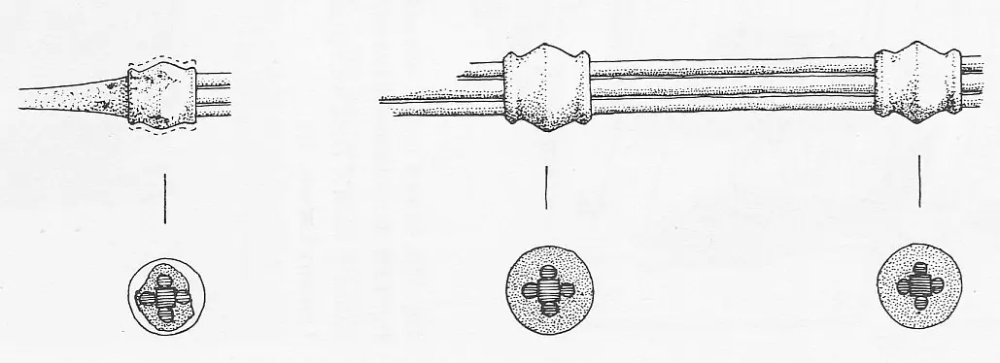
Bildquelle: Roesdahl, Else - Fyrkat. En jysk vikingeborg. II. Oldsagerne og gravpladsen, København 1977, S. 100 - Zeichnung: Thora Fisker (von mir zugeschnitten und waagrecht gelegt).
In Offa 71/72, 2014/15 (2018), S. 229240, schreibt Jens Ulriksen über das wikingerzeitliches Grab von Trekroner-Grydehøj in der Nähe von Roskilde, Dänemark. Das Körpergrab A 505 zeigt eine rituelle Ausstattung, unter anderem enthielt es zwei Frauen, die Hälfte des Skeletts eines Mannes, einen Hengst, einen in zwei Hälften zerlegten Hund, den Fötus eines Schafes, einen kleinen aufrecht stehenden Stein und große Steinblöcke alles bedeckt mit einem Steinmantel aus Granit, Flint und Kreide. Im Ergebnis kommt der Autor zu der Einschätzung, dass es sich bei der Bestatteten um eine Völva gehandelt hat. In dem Grab fand sich ein stabähnliches Objekt aus Eisen, das als die Spitze eines Zauberstabs angesehen wird. Auch der weitere Inhalt sowie die Behandlung der Bestatteten von Trekroner-Grydehøj lassen dies vermuten.
Unter den Gräbern in Birka (Schweden) befinden sich auch einige, in deren Grabbeigaben ein Eisenstab gefunden wurde und die darüber aus heutiger Sicht jeweils als das Grab einer Völva gedeutet werden. In dem Band "Birka - Untersuchungen und Studien, Band I, Die Gräber, Text, von Holger Arbman, 1943" finden sich dazu die Grabungsberichte zu dem Grab 660 (S. 273 in der pdf-Datei) / Grab 760 (S. 319 in der pdf-Datei) / Grab 834 (S. 346 in der pdf-Datei) und Grab 845 (S. 361 in der pdf-Datei). In dem anderen Band "Birka - Untersuchungen und Studien, Band I, Die Gräber, Tafeln, von Holger Arbman, 1940" findet sich auf der Tafel 125 (S. 143 in der pdf-Datei) eine Lichtbildtafel mit den einzelnen Eisenstäben - siehe hier diesen Ausschnitt:
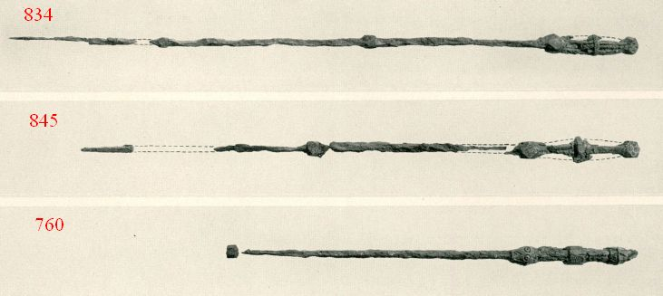
Weitere Gräber im Zusammenhang mit einer Völva / Stäben wurden inzwischen an vielen Orten gemacht. Auch das bedeutende Schiffsgrab von Oseberg wird heute dahingehend gedeutet!
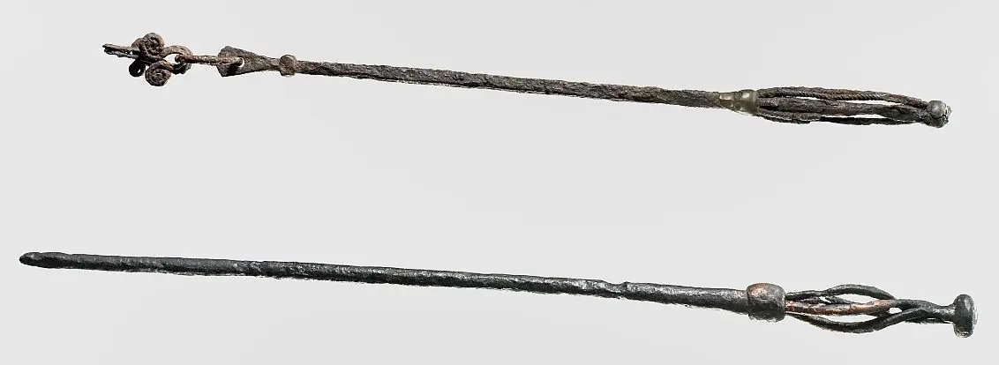
Quelle: Digitale Sammlung Nationalmuseum Kopenhagen - Foto: Arnold Mikkelsen - Lizenz: CC BY-SA 4.0 - Oben: Gävle/Schweden / Unten: Fuldby/Dänemark.
Diese beiden Stäbe werden auch auf der dänischen Webseite - Asernes æt - wiedergegeben. Daneben findet sich ein Rekonstruktionsvorschlag für den Stab von Fyrkat, wozu mehrere Teilen des Grabfunds zusammengesetzt wurden. Die Idee basiert auf der Wiedergabe einer Völva mit ihrem Stab auf einem Bildstein von Kirk Michael auf der Isle of Man - Cross fragment MM 123 from Kirk Michael - Beschreibung: Steinkreuzfragment in Kirk Michael auf der Isle of Man. Es zeigt eine Frau in einem hängenden Kleid mit einem Stab in der Hand. Der untere Teil zeigt ein angebundenes, gesatteltes Pferd. Die Seite des Kreuzes enthält eine Runeninschrift in Kurzzweigrunen. Es liest sich: ... : [ai](f)(t)(i)(r) * (m)(u)... * (u)... Dies wurde als ... eptir mu- ... transkribiert, was "... in Erinnerung an Mu- ..." bedeutet..
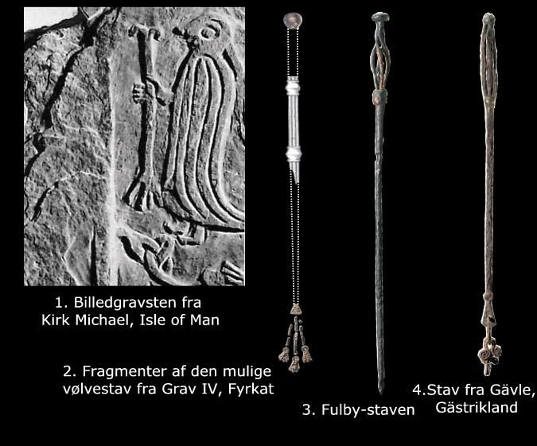
Weitere Funde aus diesem besonderen Frauengrab schauen wir uns jetzt an.
Wohl 2008 ließ das Dänische Nationalmuseum die Funde aus dem Grab und seiner Umgebung umfangreichen Laboruntersuchungen unterziehen. Anhand der Ergebnisse konnte man ein beispiellos lebendiges, detailreiches Bild von Kleidung und Erscheinung einer wikingerzeitlichen Zauberin rekonstruieren. Siehe dazu: Peter Pentz / Maria Panum Baastrup / Sabine Karg / Ulla Mannering - "Kong Haralds Völve" in Nationalmuseets Arbejdsmark, 2009, S. 215 - 232.
Bei der Bestattung trug die Frau der damaligen Mode entsprechend ein blaues Kleid mit roten Verzierungen, dazu eine Art Schleier, der mit Goldfäden reich bestickt war. Ihr Schmuck bestand aus Amuletten und Silberanhängern in Form von "Schwanenfüßen".
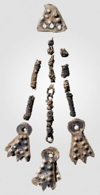
Beschreibung: Fragmente von Rasselschmuck aus gestanzten Silberzinnplatten in dünnen Ketten. Länge: 6,4 cm. Oben ein dreieckiges Stück mit 4-5 gestanzten Punktstempeln und in einer Breitseite drei Löcher, vermutlich zur Befestigung der Ketten, die drei Paar Klapperplatten gehalten haben. Die Rasselplatten bestehen aus identischen ausgeschnittenen silbernen Zinnfiguren, die paarweise mit dem Rücken zugewandt angeordnet sind, so dass die gehämmerten Stempel auf allen sichtbaren Seiten erscheinen. Die Ketten bestehen aus ca. 0,5cm. lange Kettenglieder, die vermutlich dadurch entstanden sind, dass ein sehr dünner Silberdraht in Längsrichtung der Kette mehrfach zusammengefaltet und schließlich darum gewickelt wurde. Bildquelle: Digitale Sammlung Nationalmuseum Kopenhagen - Foto: Arnold Mikkelsen - Lizenz: CC BY-SA 4.0
Überraschungen bot auch ihre weitere Habe. Sie besaß die u.a. gotländische Dosenfibel, wie man sie nur selten außerhalb von Gotland findet; sie enthielt Spuren von Bleiweiß, das man seit ca. 2000 Jahren als Schminke oder Salbengrundlage benutzt (giftig!). Die Brosche war rechts neben ihrem Kopf abgelegt.
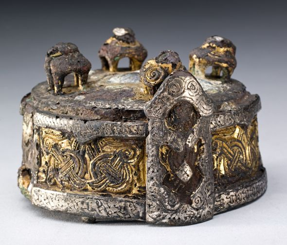
Bildquelle: Digitale Sammlung Nationalmuseum Kopenhagen - Foto: Arnold Mikkelsen - Lizenz: CC BY-SA 4.0
Beschreibung: "Runde dosenförmige Fibel aus Bronze. Durchmesser unten: 6 cm. Höhe: 3 cm. Gegossen mit Gold-, Silber- und Niellobeschichtungen, reiner Gotland-Typ. Vier Seitenteile mit vergoldeten Relieftieren im Jelling-Stil werden durch ursprünglich vier, jetzt nur noch einen hohen Bügel mit einer hochstilisierten menschlichen Figur in vergoldetem Relief, umgeben von Silber und Niello, getrennt. Der mit zwei durch die Dose gehenden Nieten befestigt ist. Zusätzlich vier plastische Tiere gleichmäßig auf der Brosche verteilt. Sie sind gegossen und reliefiert, haben einen vergoldeten Körper mit Beinen und Kopf aus Silber und Niello."
Zu diesem Fund kann inzwischen angemerkt werden, dass bei den Ausgrabungen am 13. Juli 2017 am Nordtor des Vallø Borgring auf Seeland von der Museumsinspektorin Nanna Holm ein spektakulärer Fund - ein kleiner, fein dekorierter Silberbeschlag - gemacht wurde, der womöglich zu dieser Brosche gehört hat und der die Vermutung aufkommen ließ, dass diese Völva mit Harald Blauzahn einst von Burg zu Burg zog, um an verschiedenen Orten ihre Magie wirken zu lassen. Ein Medienbericht mit dem Titel »Det var satans«: Dette smykke kan have tilhørt Blåtands troldkvinde" von "videnskab.dk" vom 08.08.2017 - in dänischer Sprache - kann hierüber abgerufen werden. Daraus stammen auch die beiden folgenden Fotos/Zeichnungen - Foto: Nationalmuseet/Museum Sydøstdanmark / Zeichnung: Museum Sydøstdanmark. Ein Beitrag der Aarhus Universität zu dem Fund findet sich hier.

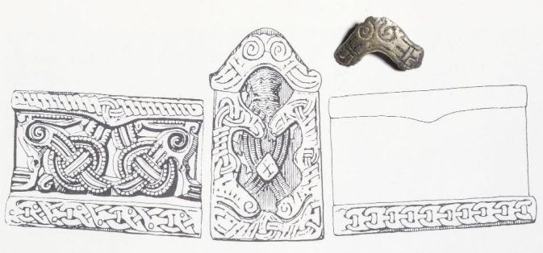
In der aktuellen dänischen TV Serie des Senders DR mit dem Titel "Gåden om Odin" (Start am 08.03.2023) werden im 2. Teil (insg. 28.44 Minuten) mit dem Titel "Haralds Guder" - die beiden Teile vor laufender Kamera zusammengepasst (ab Minute 7:50 bis 10.40) - ein wirklich spannender Moment! Anmerken darf man noch, dass die beiden Fundorte mit heutigen Verkehrsmitteln etwa 320 km auseinander liegen!
Unter den weiteren Grabbeigaben befand sich ein kleines dünnwandiges Glas, das als Spiegel gedient haben könnte, es enthielt aber zugleich eine Substanz aus Phosphor, Blei und Kalzium. Ein möglicherweise aus dem Osten stammender kleiner Rundbodenkessel aus Kupferlegierung war mit einer Art "Sieb" aus Gräsern überdeckt. Darin waren Spuren einer fettigen Substanz nachweisbar, die mit Bilsenkrautsamen zu einer halluzinogenen Masse vermischt werden kann, welche mittelalterliche Quellen als "Hexensalbe" oder auch "Flugsalbe" bezeichnen, weil sie das Gefühl des Fliegens hervorruft, wenn man den Körper damit einreibt. Vermutlich benutzte die Frau von Fyrkat sie für Rituale oder als "bewusstseinserweiternde" Hilfsmittel beim Wahrsagen.
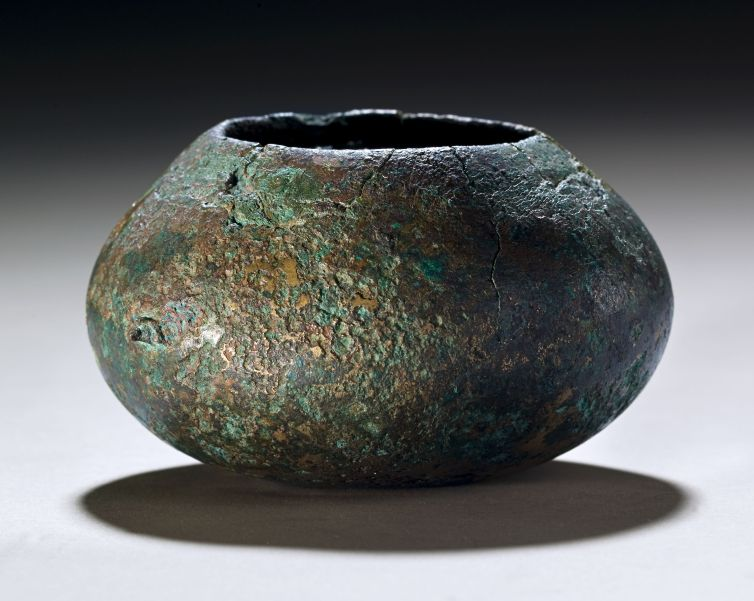
Bildquelle: Digitale Sammlung Nationalmuseum Kopenhagen - Foto: Arnold Mikkelsen - Lizenz: CC BY-SA 4.0
Beschreibung: "Höhe: 6 cm. Breite: 9,9 cm. Öffnungsdurchmesser: 5,3 cm. Gleichmäßig abgerundetes Profil, leicht abgeflachter Boden, der an der breitesten Stelle 3 cm hat."
Außerdem fand sich noch dieses Teil, das als Knauf eines Gehstocks oder einer Keule gedeutet werden kann.
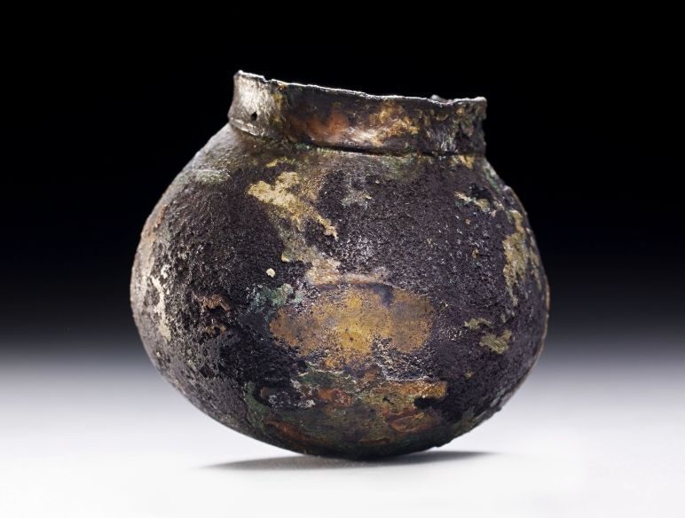
Bildquelle: Digitale Sammlung Nationalmuseum Kopenhagen - Foto: Arnold Mikkelsen - Lizenz: CC BY-SA 4.0
Beschreibung: Bronzeobjekt, rund mit senkrechtem Kragen. Höhe: 3,8 cm. größte Breite: 4,3 cm. Kragenhöhe: 0,5 cm.
In dem Grab fand sich auch noch dieser stuhlförmige Anhänger.
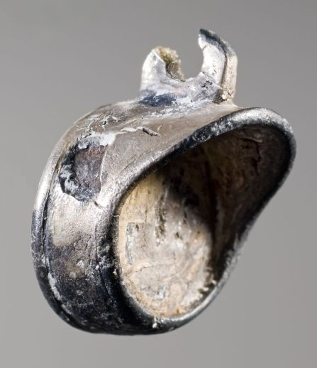
Beschreibung: Kreisförmiger, stuhlförmiger Silberanhänger - Durchmesser: 1,3 cm. Besteht aus einer dünnen Platte, um deren Rand ein Band gelegt wurde, so dass die Platte oben und unten in einer Aussparung liegt. Zur Öse hin verbreitert sich das Band, so dass es sich wie eine Stuhllehne formt. Entlang der beiden Kanten des Bandes befindet sich eine leicht eingeschnittene Linie. Die Rückseite des Sitzes ist glatt, die Vorderseite zeigt Spuren einer gelblichen Beschichtung, möglicherweise einer Vergoldung.
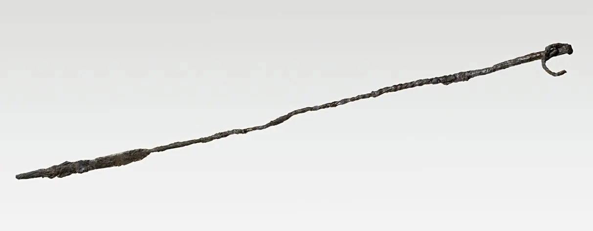
Beschreibung: Der Bratspieß hat eine Gesamtlänge von 99 cm. An einem Ende leicht gebogen. Hergestellt aus einer langen Eisenstange mit quadratischem Querschnitt, geformt zu einer Klinge, einer gewundenen Stange und einem Griff mit einem Ring. Die Klinge wurde aus der Stange gehämmert; erhaltene Länge ca. 24 cm. Der Querschnitt ist spitzoval. Bildquelle: Digitale Sammlung Nationalmuseum Kopenhagen - Foto: Arnold Mikkelsen - Lizenz: CC BY-SA 4.0.
Außerdem fanden sich in diesem besonderen Grab noch 2 Glasperlen, 1 Kupferperle (?), eine geflochtene Silberkette, 2 silberne Zehen(?)ringe, Silberdrahtring, Nadel, 2 Trinkhörner, Schweineunterkiefer, Holzkasten (leer) mit passendem Schlüssel, Spinnwirtel, 2 Wetzsteine, Messer, 4 Ösenfragmente und Gewöll.
Verglichen mit dem reichen Inhalt der Gräber an Schmuck, Hausgerät und Waffen wirken die übrigen Funde bescheiden. Der prächtigste Schmuck der Ausgrabung stammt aber nicht aus einem Grab, sondern wurde im Bereich des Walls gefunden. Es ist ein Bruchstück eines kleinen Gehänges aus Gold mit einem stilisierten Vogel in hervorragender Filigranarbeit.
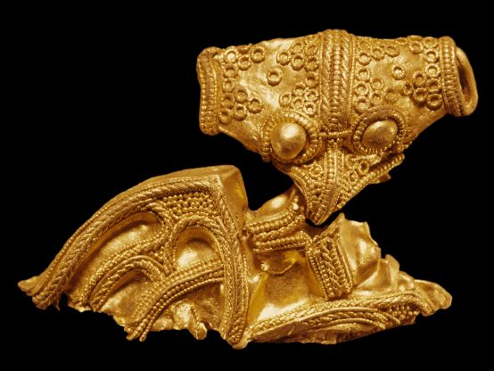
Quelle: Digitale Sammlung Nationalmuseum Kopenhagen - Foto: Lennart Larsen - Lizenz: CC BY-SA 4.0Beschreibung: Fragment eines goldenen Anhängers. Vogelkopfförmige Öse 2,2 cm groß, mit Fragment einer 3,9 cm breiten Platte. Die Platte wurde abgeschnitten, -gebrochen oder -gebogen. Die Öse ist symmetrisch. Mit zwei großen Augen und darunter einem "Schnabel", der zur Platte führt. Von oben zwischen den Augen über den Schnabel verläuft ein filigranes Band. Auch an den Ösenenden befindet sich solches, aber einfacheres Band. Die leeren Flächen des Kopfes sind mit kleinen filigranen Kreisen und an der Spitze des Schnabels auch mit Granulation verziert. Die Platte, die mit dem Kopf verschmolzen zu sein scheint, ist doppelt: glatte Rückenplatte und gedrückte Vorderplatte, die mit filigranen Windungen und Granulationen verziert ist. Die Plattenstärke beträgt ca. 0,3 cm, an den meisten Stellen wurden Vorder- und Rückplatte zusammengedrückt. Unter Berücksichtigung der Biegungen ist anzunehmen, dass das untere Stück vermutlich rund gewesen ist. Gefunden in der obersten Erdschicht (bis zu 20 cm tief) im Ost-West-Abschnitt in der Nähe des Walls, unmittelbar südlich des Osttors.
Weitere Fundstücke von Fyrkat - eigene Fotografien im vormaligen Museum in Hobro aufgenommen:
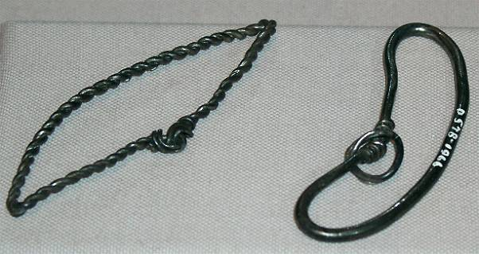
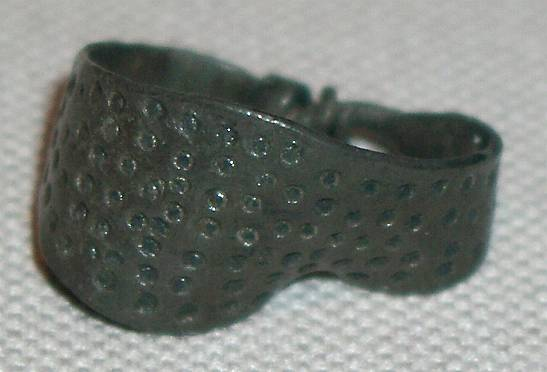
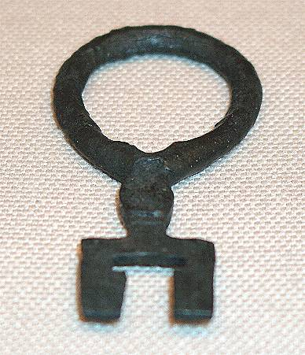
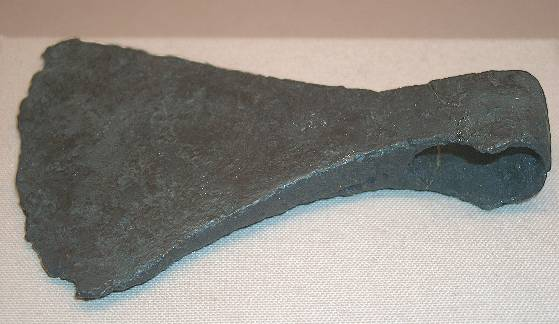
Typische Wohnplatzfunde - Gefäßscherben, Gebeine, Werkzeug u.a. - die gewöhnlich bei Ausgrabungen von Hausplätzen in großer Menge auftreten, sind in Fyrkat nur in geringem Umfang gefunden worden, und die Kulturschicht des Wohnplatzes, die durch Ablegen von Schmutz und Abfall entsteht, fehlt im Lager völlig. Hieraus kann man schließen, dass das Lager nicht über längere Zeit ständig genutzt worden ist und dass es kaum dem eigentlichen bürgerlichen Leben gedient hat. Das ist auch nicht zu erwarten, weil eine zivile Gemeinschaft sich niemals dem strengen und pedantischen Schema unterordnen wird, das bei der Errichtung des Lagers befolgt worden ist und das ebenso das tägliche Leben in ihm geprägt haben wird. Fyrkat ist also eindeutig eine militärische Anlage, eine Kaserne mit Ordnung und Disziplin, mit Genauigkeit und Gleichrichtung.
Mit Hilfe der Funde lässt Fyrkat sich auf die zweite Hälfte des 10. Jahrhunderts datieren. Diese Zeitbestimmung stimmt genau mit den archäologischen Datierungen von Trelleborg und Nonnebakken überein. Das vierte Lager dieses Typs, Aggersborg, liegt auf der Stelle eines zerstörten Dorfes der Wikingerzeit, weshalb man es nach den Funden nicht genau zeitlich einordnen konnte. In den meisten Einzelheiten sind Aggersborg und Fyrkat sehr verwandt. Selbst ein versteckter Zug in der Zimmererkonstruktion im Innern des Walls ist in den zwei Lagern genau gleich, und so kann kein Zweifel daran bestehen, dass sie fast gleichzeitig ausgeführt sind, wahrscheinlich vom gleichen Baumeister.
Die Funde von Fyrkat waren bis Sonntag, 22.08.2021, im Hobro Museum - Vestergade 21, 9500 Hobro - ausgestellt.
Ab dem 23.08.2021 wurden die Ausstellungsstücke durch die Restauratoren des Nationalmuseums und denen des Nordjyske Museums abgebaut und eingepackt. Die Funde aus Grab IV wurden nach Kopenhagen gebracht und dort neuerlichen intensiven Analysen unterzogen. Sie sind Teil des Forschungsprojektes "Tanken bag tingene animisme, shamanisme og vikingetidens materielle kultur" - übersetzt: "Die Idee hinter den Dingen Animismus, Schamanismus und die materielle Kultur der Wikingerzeit". Anschließend werden sie in der ab 2024 dann neu eingerichteten Ausstellung im Nationalmuseum in Kopenhagen, die sich mit dem Religionswechsel in den 900er Jahren auseinandersetzt, zu sehen sein. Die anderen Funde wurden zur sicheren Aufbewahrung in die Lagerhäuser von Nordjyske Museums nach Vestbjerg geschickt. Alles zusammen soll dann ab 2027 direkt neben der Ringburg Fyrkat im benachbarten Mühlenhof dauerhaft ausgestellt werden. Eröffnung war jetzt aber laut Presseberichten schon am 02.09.2024 - siehe oben.
Fyrkat Møllegaard - 14.06.2022
Die fünf bisher bekannten Lager des Trelleborg-Typs gehören also alle in ein und dieselbe Periode. Als Bauherr konnte nur ein König eine so große Aufgabe bewältigen. Bauherr ist entweder Harald Blauzahn (*um 910 - 01.11.985/86) oder dessen Sohn Sven Gabelbart (*963 - 02. oder 03.02.1014), der um 985 seinen alternden Vater vom Thron verjagte.
Der Ausgräber von Trelleborg, Poul Nørlund (*04.11.1888 - 26.05.1951, Archäologe),
Bildquelle: Königliche Bibliothek Kopenhagen - Lizenz: Public Domain
fasste diese Anlage als Winterkaserne und Trainingslager für Sven Gabelbarts Wikingerheere auf. Vom Beginn des letzten Jahrzehnts des 10. Jahrhunderts an organisierte dieser kriegslüsterne König in zwanzig Jahren unaufhaltsam Wikingerzüge nach dem schwachen und zersplitterten England, gelockt von dem Brandschatz, dem Dänengeld, das die Engländer nur zu willig entrichteten, um Plünderung und Brand zu entgehen.
Die Entdeckung von vier anderen Lagern von Trelleborgs Art - und weitere könnten noch dazu kommen - hat Poul Nørlunds Hypothese kaum schwächen können. Im Gegenteil. Die großen Scharen von Wikingern, die durch das leicht verdiente Dänengeld zu Berufskriegern wurden, die keine Lust hatten, nach Hause zu der mühevollen Arbeit in den Dörfern zurückzukehren, konnten kaum in einer einzigen Kaserne wohnen.
Es darf aber nicht übersehen werden, dass die vier Wikingerlager auch etwas anderes waren als Kasernen. Sie waren zugleich starke Festungen, auf deren Verteidigungswerke viel Mühe verwandt worden ist und die alle an wichtigen Stellen des Reiches, an bedeutenden Verkehrsstraßen lagen. So liegt Fyrkat an der Stelle, wo die ostjütische Hauptstraße den Onsild-Fluss kreuzte, der selbst eine wichtige Verkehrsader war. Es wird nicht falsch sein anzunehmen, dass die Wikingerlager auch eine Aufgabe innerhalb des Reiches hatten. Einige Forscher sind sogar der Meinung, dass es die wichtigste Funktion der Burgen, die Macht des dänischen Königs innerhalb des Landes zu sichern gewesen ist, und in der heutigen Forscherdiskussion gibt es eine starke Tendenz, die Aufführung der fünf Burgen mit der Sammlung des dänischen Reiches, die König Harald Blauzahn Mitte des 10. Jahrhunderts vollzog, zu verknüpfen.
Der abgerundete Plan der Wikingerlager, die durchdachten Einzelheiten und die unvergleichlich präzise Ausführung müssen die Frucht jahrhundertelanger Erfahrung auf dem Gebiet der Befestigungskunst sein. Und doch ist in dem, was wir vom Dänemark der Wikingerzeit kennen, sehr wenig, was auf diese Anlagen hinweist. Sie kommen plötzlich, ohne heimische Vorläufer. Man hat deshalb ihre Vorbilder in der Fremde gesucht, in den geometrischen römischen Lagern, deren Reste die Wikinger in England studieren konnten, in dem byzantinischen Kaiserreich und in den großen befestigten Städten im Nahen Orient, zum Beispiel in Bagdad. Eine vor kurzem, auf der Insel Walcheren in der Scheldemündung, vorgenommene Ausgrabung scheint inzwischen das Problem lösen zu können. Hier hat man in Souburg einen Ringwall nachgewiesen, der mit derselben geometrischen Präzision und mit denselben vier Toren wie die dänischen Burgen aufgeführt ist. Souburg ist vermutlich von den karolingisch-ottonischen Herrschern zur Wehr gegen die Wikinger errichtet worden, die jedoch schnell von ihren Gegnern lernten.
Wenn auch die Pläne fremdartig wirken, so sind doch die Häuser ganz und gar auf dem Boden der heimatlichen Tradition entstanden. Große Häuser mit gekrümmten Längsseiten sind für die nordische Wikingerzeit besonders charakteristisch, und beim Ausgraben von Großhöfen in Jütland hat man aus der gleichen Zeit stammende Bauten gefunden, sie sowohl in der Form, Bauart und Größe, als auch in der Raumeinrichtung genaue Parallelen zu den Häusern der Wikingerburgen sind. Diese Häuser dienten als Wohnungen für Bauernhäuptlinge, die sich auf diese Weise zu Hause fühlen konnten, während sie sich mit dem Gefolge von Kriegern auf Fyrkat aufhielten.
Fyrkat hatte keine lange Lebensdauer. Ein gewaltiger Brand hat es zerstört, vielleicht schon zu Sven Gabelbarts Zeit (*963 - 02. oder 03.02.1014). Ob der Brand durch kriegerische Ereignisse verschuldet war oder unbeabsichtigt entstand, lässt sich nicht aufklären. Bei der engen Bebauung des Lagers bestand natürlich große Feuersgefahr, und deshalb war die Zerstörung auch vollständig.
Fyrkat wurde nicht wieder aufgebaut. Als England erobert war und die Wikingerzüge aufgehört hatten, wurde das große Wikingerheer aufgelöst. Aus eigenen Mitteln konnte das dänische Königshaus ein so großes stehendes Heer im Heimatland nicht halten. In Friedenszeiten musste der König sich mit seinem Gefolge begnügen, einer kleinen Schar ausgewählter Soldaten, die seinen Hof bewachten und ihn auf Reisen durch sein Reich begleiteten.
Ein Lager von Fyrkats Umfang war für das kleine Gefolge viel zu groß, und selbst bei voller Stärke war das Gefolge kaum so zahlreich, dass es den Wall hätte wirksam verteidigen können. Unter diesen Umständen waren Wikingerlager wertlos. Das Gefolge konnte sie nicht verwenden, und wenn die Flotte, die eigentliche Heeresmacht des Reiches, einberufen wurde, dann geschah dies nicht, damit sie in einer Kaserne lag. Die Lager verschwanden ebenso schnell wie sie Jahrzehnte vorher entstanden waren und sie konnten sich auch nicht auf die weitere Entwicklung des Burgenbaus auswirken. Die königliche Burg der folgenden Periode ist u.a. von Sjørring Vold her bekannt. Das ist ein hoher Hügel, umgeben von Graben und Wall mit steilen Seiten und schmaler flacher Krone, dessen einziger Bau ein Turm war, der in Notzeiten als Zuflucht dienen sollte. Die eigentlichen Bauten lagen auf einem niedrigeren, schwach befestigten Hügel. Im Gegensatz zu den großen Wikingerkasernen mit Platz für Hunderte von Soldaten fasste Sjørring Vold nur eine kleine Truppe und es konnte von einer Handvoll Männer verteidigt werden.
Im Vergleich zwischen Fyrkat und Sjørring Vold spiegelt sich eine geschichtliche Entwicklung, die die prächtig gebauten und ausgezeichnet befestigten Lager der Wikinger veralten ließ, lange bevor sie alt geworden waren.
Informationen zu Fyrkat und zu den anderen Ringburgen finden sich über die Webseiten des Nationalmuseum in Kopenhagen hier.
Über weitere Internetauftritte können zu Fyrkat grob Informationen - teilweise auch in deutscher Sprache - hier - hier - Wikipedia - abgerufen werden.
Der Ausgrabungsbericht zu Fyrkat erschien als zweibändiges Werk in dänischer Sprache mit einer ausführlichen englischen Zusammenfassung - Darin finden sich zahlreiche sw-Fotos, Plan- und Rekonstruktionszeichnungen usw.
Olaf Olsen / Holger Schmidt - Fyrkat - En jysk vikingeborg, Bind I: Borgen og bebyggelsen. Nordiske Fortidsminder, Serie B, Vol. 3. Det kgl. nordiske Oldskriftselskab, København 1977. 241 pages, ill.
Else Roesdahl - Fyrkat - En jysk vikingeborg, Bind II: Oldsagerne og gravpladsen. Nordiske Fortidsminder, Serie B, Vol. 4. Det kgl. nordiske Oldskriftselskab, København 1977. 233 pages, ill.
Weitere Literaturhinweise:
Else Roesdahl / Jørgen Nordqvist - "De døde fra Fyrkat" - Nationalmuseets Arbejdsmark - 1971, S. 15-32
Olaf Olsen - Fyrkat - Ein Wikingerlager in Jütland - 1979 - Nationalmuseum - kleine Broschüre
Silke Eisenschmidt - Kammergräber der Wikingerzeit in Altdänemark - 1994 - S. 112 Nr. 65 - Fyrkat Grab 4 / S. 113 Grab Nr. 333, 334 / S. 136 Grab Nr. 65 und 406
Peter Pentz / Maria Panum Baastrup / Sabine Karg / Ulla Mannering - "Kong Haralds Völve" in Nationalmuseets Arbejdsmark, 2009, S. 215 - 232
Peter Pentz / Neil Price - Die Wikinger, Ausstellungskatalog, Museum für Vor- und Frühgeschichte der Staatlichen Museen zu Berlin, 2014, S. 196-197 - Das Frauengrab in Fyrkat
Etwa 500 m von der Wikingerburg wurde Anfang der 90'er Jahre mit der Errichtung eines originalgetreuen Wikingerhofs begonnen. Als Gegenstück zu der militärisch ausgerichteten Burg handelt es sich hier um eine ausgesprochen zivile Anlage. Der Wikingerhof, der nach seiner Fertigstellung aus 8-9 kleineren und größeren Gebäuden besteht, wird entsprechend einem in Vorbasse/Jütlandgemachten Fund rekonstruiert. Das Haupthaus ist ein 33 m langes und 238 m2 großes Langhaus mit Kuhstall, Wohnung (Wohn- und Schlafraum). Die Holzkonstruktion ist aus bis zu 190 Jahren alten Eichen angefertigt worden, die in den Wäldern des Klosters Støvringgaard am Randersfjord gefällt wurden. Das Dach ist aus Schilf eingedeckt, das mit Weide befestigt ist. Der First besteht aus im Onsild Bachtal (die Wiese unterhalb des Hofes) gestochenem Torf. Die Wände bestehen aus Eichenholzpfosten, zwischen denen die Gefache mit einem dichten Weidengeflecht ausgefüllt sind. Dieses Flechtwerk ist außen und innen mit Lehm verstrichen. Der Lehm, der aus Skals geholt wurde, ist sorgfältig mit Wasser, Kuhmist und Stroh aufbereitet. Schließlich sind die Wände mit lang gelagertem, ockergemischten Kalk angestrichen. Der Fußboden besteht aus dem selben Lehmgemisch wie die Wände. Das Holz außen am Haus ist mit rotem und gelben in Quark angerührten Ocker gestrichen.
In den Sommermonaten dient der Wikingerhof Schulklassen und Touristen, wobei diese wie in der Wikingerzeit leben und verschiedenen Aktivitäten, wie z.B. Mahlen von Korn, Spinnen und Weben, Schmieden, Butter machen, Töpfern, Bogenschießen, Lederverarbeitung u.v.a. ausprobieren können.
Im Rahmen meiner 2022er Jütland Wikinger Tour war ich am Donnerstag, 16.06.2022, mal wieder bei der Wikingerhof Fyrkat und habe diese Fotografien gefertigt.


Dieses Luftfoto ist von der Webseite "Skraafoto.dk" - Lizenz: CC BY 4.0 - gehört zum "Styrelsen for Dataforsyning og Infrastruktur" - Aufnahmedatum 17.04.2023 - Download 04.11.2023 - Screenshot.